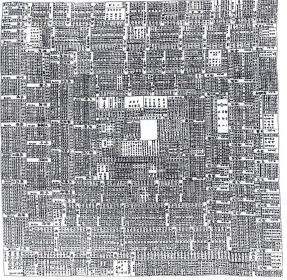
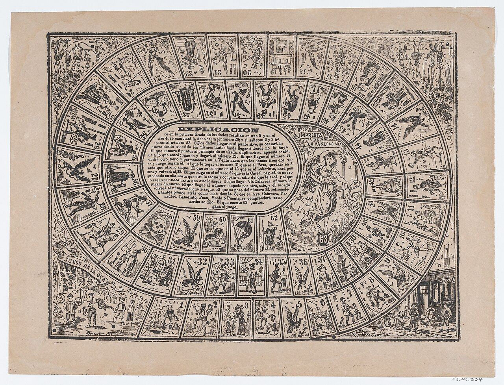
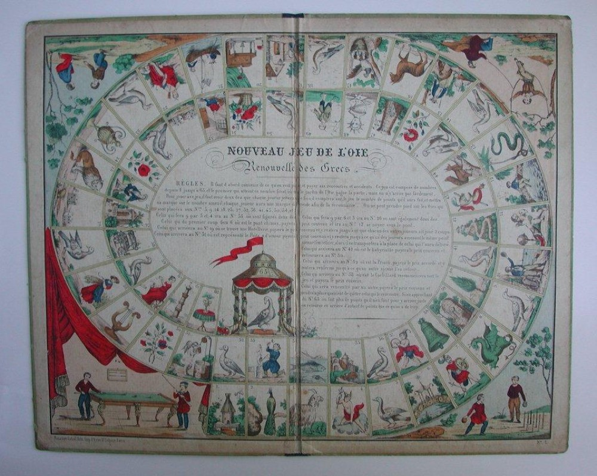

研究状况
揽胜图可以先放在两类旁边看。一类是升官图／彩选。一类是欧洲鹅棋（Game of the Goose），尤其是 Adrian Seville 写过的地理主题变体。放在旁边，是为了看类型。不是说它们同源，这一次也还没有做完比较。
彩选看采色和进退，不按点数一格一格走。揽胜图是一枚骰子、按点数沿地点走、地点上有赏罚，所以比彩选更近鹅棋。近，只说明机制像。玩法页引了清人「从升官图化出」「脱胎于升官图」两句，那是金学诗和徐珂的话，不是这份笔记的结论。
升官图／彩选、鹅棋两节仍是较短的入口。本页不把它们写成揽胜图专论。升官图试用本件见升官图与试用可玩。
行旅比较书目
「印刷图戏里的行旅」可切入书目（2026年11月26日）。四组：揽胜与胜游；欧洲地理主题赛鹅图；日本道中、名所双六；升官图和彩选，只作背景。比的是行旅怎样写进印刷棋盘。不论证同源，也不追问谁传给谁。




并置只为看「掷点前进＋格上赏罚」这类机制长什么样，不证明源流。
升官图／彩选
-
Carole Morgan, “The Chinese Game of Shengguan tu,” Journal of the American Oriental Society 124, no. 3 (2004)。Crossref 的 page 字段是 517。正文这次没有逐页重读。
-
宋秉仁，《陞官圖遊戲沿革考》，《臺灣師大歷史學報》，2005。华艺线上图书馆，需要登录。全文这次没有打开，所以不写页码。
-
卜永坚，2010，《遊戲官場：陞官圖與中國官制文化》。只核到豆瓣书目页，全文没有查。
-
Andrew Lo, “Official Aspirations: Chinese Promotion Games,” in Colin Mackenzie and Irving L. Finkel, eds., Asian Games: The Art of Contest, 2004。SOAS 仓储页这次请求返回 403，没有打开，原书页码没有再核对，所以不写页码。下面的地址只用来定位。
-
故宫博物院藏折叠式《升官图》，文物号故 179983。这是一件器物记录，不是揽胜图的馆藏。
鹅棋

.png){kind=link}
-
Adrian Seville, “The geographical Jeux de l'Oie of Europe,” Belgeo 3–4 (2008)。页码按 DOI 记录为 427–444。文章谈的是欧洲地图上的鹅棋，不是中国图戏。
-
Seville, 2019. JSTOR 稳定链接如下。这次打开停在 JSTOR 的验证页，正文没有读，不写页码，也不转述书中的句子。检索结果给出的题名是 The Cultural Legacy of the Royal Game of the Goose: 400 Years of Printed Board Games。